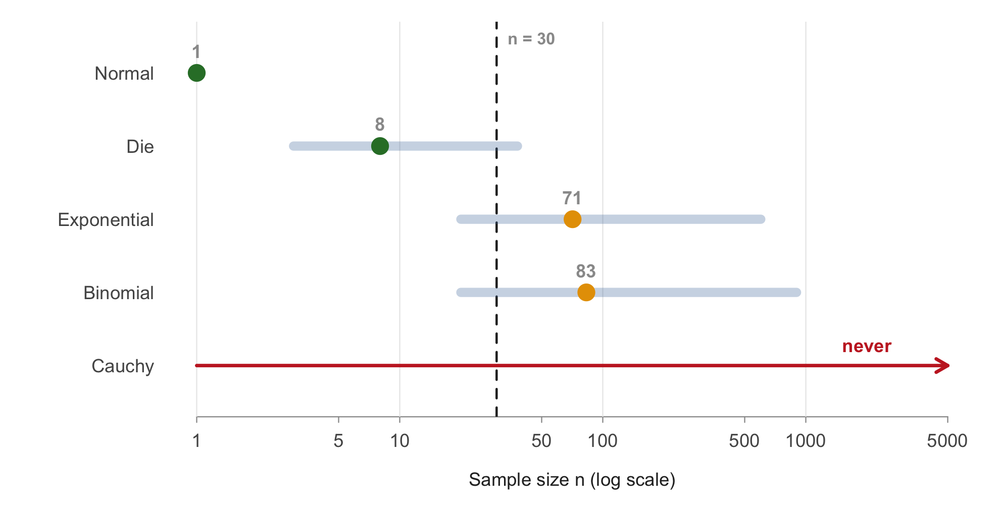

| Population | My prediction | Smallest n judged normal | Strict / lenient n | Skewness at chosen n | Ex. kurtosis at chosen n | SE: simulated / theory | Key observation |
|---|---|---|---|---|---|---|---|
| Standard normal | 1 | 1 | 1 / 1 | -0.008 | -0.014 | 1.001 | Control case: normal at every n |
| Six-sided die | 15 | 8 | 38 / 3 | -0.014 | -0.167 | 0.999 | Symmetric; only the flat, discrete shape had to fade |
| Exponential (λ = 1) | 45 | 71 | 600 / 20 | 0.243 | 0.104 | 1.006 | Skewness is the bottleneck; theory predicts 64 |
| Binomial (5, 0.1) | 100 | 83 | 900 / 20 | 0.140 | 0.047 | 1.004 | Skewness passes at 30; discreteness sets the answer |
| Cauchy (0, 1) | never | none | none / none | undefined | undefined | no σ | Mean of n values has the same spread as one value |
Findings
Is the number 30? A cross-population summary of the study
TipIn plain words
Textbooks say an average of 30 data points behaves like a bell curve, and the usual “95% range” depends on that. I tested the rule with 100,000 simulated studies for every sample size, on textbook data and real data. The answer depends on the data: balanced data need fewer than 10 values, lopsided data like prices or delays need 50 to 2,450, and some data never get there. In practice, a 95% range built from 30 real flight delays caught the true average only 89.8% of the time. New to the topic? Start with the visual story.
Executive summary
I used Monte Carlo simulation in R (100,000 simulated samples for every sample size, seed 9426) to find the smallest sample size n at which the sample mean is “normal enough” for five assigned populations, and then for five real datasets. “Normal enough” means passing four calibrated checks (skewness, excess kurtosis, Q-Q straightness, and the two tails of a 95% interval) and continuing to pass at every larger n.
- There is no universal n. The answer ranged from n = 1 (normal population) to n = 83 (rare-event binomial), and no n at all for the Cauchy.
- n = 30 is not a safe rule. It is more than enough for symmetric populations, but too small for the skewed exponential (n = 71) and binomial, and for 4 of 5 real datasets.
- Skewness predicts the answer. Because the skewness of the mean shrinks as skewness/√n, the threshold is about n ≈ (skewness / 0.25)². This predicted 64 for the exponential (simulated: 71) and came close for the continuous real datasets.
- Discreteness adds a separate delay. The binomial passed the skewness check by n = 30 but needed n = 83 before its stair-step Q-Q plot and jumping tail rates settled.
- Infinite variance breaks the theorem. For the Cauchy, the mean of 5,000 values has exactly the same spread as a single value. Large n does not help at all.
- The standard error formula σ/√n held at every n for every population with finite variance, even where the shape was still far from normal. The shape is the slow part, not the spread.
My standard for “normal enough”
| Check | Pass zone | Why |
|---|---|---|
| Skewness | |skew| ≤ 0.25 | keeps each tail of a 95% interval within about 0.7 points of 2.5% |
| Excess kurtosis | |kurt| ≤ 0.5 | about 10× the Monte Carlo noise; catches heavy tails |
| Q-Q correlation | r ≥ 0.998 | the Q-Q equivalent of skewness 0.25 |
| Tails | 1.75%–3.25% on each side | the practical goal itself, checked one side at a time |
The thresholds were calibrated by simulation (details in Method). Every result is also reported under a strict standard (skewness ≤ 0.1) and a lenient one (skewness ≤ 0.5).
Final table: assigned populations

Extension: real data
| Dataset | Skewness | Predicted n, (skew/0.25)² | Simulated n | Is n = 30 enough? |
|---|---|---|---|---|
| Old Faithful waiting times | -0.42 | 3 | 6 | yes |
| Great inventions per year | 1.23 | 25 | 38 | no |
| Diamond prices | 1.62 | 42 | 51 | no |
| NYC flight arrival delays | 3.72 | 222 | 235 | no |
| Midwest county populations | 12.15 | 2,362 | 2,450 | no |
See Real data for the full analysis.
Answers to the research questions
Sample size: is there evidence for a universal rule such as n = 30?
No. The required n depends on the population and spans more than three orders of magnitude, and for one population it does not exist. n = 30 happens to correspond roughly to my lenient standard: under that standard every finite-variance population I tested passes by about n = 20 or less, except the heavy-tailed real datasets. Under my main standard, which keeps each tail of a 95% interval within 0.75 points of 2.5%, 30 is too small for every strongly skewed population. So the rule of thumb is only safe if you accept one-sided error rates that can be off by a factor of 1.5 to 2.5.
Population shape: which converged fastest, which slowest, and why?
- Fastest: the normal (n = 1, already normal), then the die (n = 8) and the Old Faithful waiting times (n = 6). All are symmetric or nearly so, so their skewness is zero or small from the start, and mainly kurtosis and discreteness have to fade.
- Slowest (finite variance): the binomial (n = 83) and exponential (n = 71) among the assigned populations; county populations (n = 2,450) among the real data. The exponential is held back by skewness, the binomial by discreteness, and the county data by a few extreme values (skewness 12).
- Never: the Cauchy.
The main driver is the population’s skewness, because the skewness of the mean decreases only as 1/√n: halving the remaining skewness requires four times as much data. Kurtosis decreases as 1/n and was never the limiting factor for finite-variance populations.
Assumptions: what happened when they were violated?
- Infinite variance (Cauchy): the CLT does not apply at all. The interquartile range of the sample mean stayed at 2.0 from n = 1 to n = 5,000, and skewness and kurtosis estimates jumped randomly because the true values do not exist. The sample median does converge, so the right response to such data is a robust statistic.
- Dependent observations and non-identically distributed observations were offered as extra-credit extensions and are not part of this submission. The real-data page notes where independence is likely to fail in practice (flight delays on the same day are correlated).
Why it matters: real 95% intervals
The checks above use the true population SD. An analyst has to estimate the SD from the same sample, and for lopsided data a small sample usually misses the rare huge values. The table shows how often the usual 95% t-interval actually contained the true mean (100,000 samples each; details in Real data, Part C).
| Dataset | n | Caught the truth | Too low | Too high |
|---|---|---|---|---|
| Geyser wait (min) | 30 | 94.8% | 1.9% | 3.2% |
| Geyser wait (min) | 100 | 94.9% | 2.2% | 2.9% |
| Geyser wait (min) | 6 | 92.2% | 1.6% | 6.2% |
| Inventions / year | 30 | 94.1% | 4.7% | 1.1% |
| Inventions / year | 100 | 94.7% | 3.7% | 1.6% |
| Inventions / year | 38 | 94.2% | 4.6% | 1.2% |
| Diamond price (USD) | 30 | 93.0% | 6.2% | 0.8% |
| Diamond price (USD) | 100 | 94.4% | 4.2% | 1.4% |
| Diamond price (USD) | 51 | 93.8% | 5.1% | 1.1% |
| Flight delay (min) | 30 | 89.8% | 9.8% | 0.4% |
| Flight delay (min) | 100 | 92.9% | 6.3% | 0.7% |
| Flight delay (min) | 235 | 94.1% | 4.7% | 1.1% |
| County population | 30 | 71.7% | 28.3% | 0.0% |
| County population | 100 | 80.3% | 19.7% | 0.0% |
| County population | 2,450 | 93.7% | 5.3% | 1.0% |
With 30 flights the interval missed 10.2% of the time, almost all of it on the low side; with the 235 flights my shape tests required, it missed 5.9%. County populations at n = 30 were caught only 71.7% of the time. This is the practical cost of the rule of 30 on lopsided data.
Reproducibility
Every simulation uses seed 9426, set immediately before each sample size, and B = 100,000. As required, I reran the exponential analysis with a different seed:
| Seed | Chosen n (main) | Strict n | Lenient n | Skewness at n = 30 | Skewness at n = 100 |
|---|---|---|---|---|---|
| 9426 | 71 | 600 | 20 | 0.360 | 0.198 |
| 2026 | 69 | 600 | 20 | 0.378 | 0.189 |
The exact numbers changed, but the conclusion did not: the threshold stayed in the same narrow range around the theoretical 64, and n = 30 failed under both seeds. The seed makes the results reproducible; the large B makes them reliable.
To reproduce everything: open clt-monte-carlo.Rproj in RStudio and run quarto render, then Rscript R/export_site_data.R for the website data. Packages: knitr, rmarkdown, ggplot2, nycflights13, jsonlite.
Limitations
- “Normal enough” is a judgment call. I report three standards so readers can apply their own.
- Near a threshold, Monte Carlo noise can flip a single n. The “keeps passing for every larger n” rule and B = 100,000 reduce but cannot remove this; answers should be read as ±5%.
- The strict and lenient answers use a coarser grid than the main answer, so they are approximate.
- The real datasets are treated as complete populations and sampled with replacement.